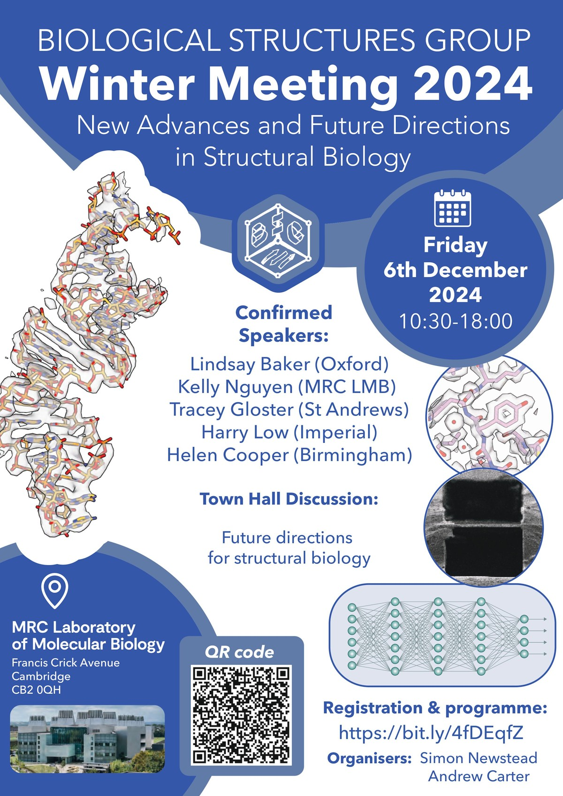

The aim of this page is to provide links to the
biological crystallography groups in the UK, the main european
facilities, forthcoming meetings and courses, suppliers,
employment opportunities and specialised or generally useful
software.
All constructive suggestions for improvement are very welcome indeed and please let me know what you would like to see in this page!
No thrills warning: the format of this page is basic.
BSG Winter meeting 2024 - New Advances and Future Directions in Structural Biology
MRC-LMB Cambridge, Friday 6th December, Organisers: Andrew Carter (Cambridge) and Simon Newstead (Oxford)Poster talks and prizes are available and will be selected from the submitted abstracts.
Preliminary programme
10:30 - 11:00 Registration (with coffee and pastries)
10:50 - 11:00 Introductory remarks
Session 1
11:00 - 11:25 John Jumper (Google Deepmind)
11:25 - 11:40 Poster speaker
11:40 - 12:05 Kelly Nguyen (MRC LMB), Replenishing the ends: Structural mechanisms of human telomerase.
12:05 - 12:20 Poster speaker
12:20 - 12:45 Tracey Gloster (St Andrews), Structure and function of carbohydrate processing enzymes.
12:45 - 14:15 Lunch and Poster Session
Session 2
14:15 - 14:40 Harry Low (Imperial), ESCRT-III-like proteins in bacteria: their role in membrane stress and repair.
14:40 - 15:05 Vicki Gold (Exeter), Cryo-EM reveals a new twist on bacterial type IV pili.
15:05 - 15:20 Poster speaker
15:20 - 15:45 Helen Cooper (Birmingham), Native ambient mass spectrometry: In situ analysis of proteins and their complexes in tissue.
15:45 - 16:00 Coffee
Town Hall Discussion - Future Directions for Structural Biology
16:00 - 17:00 Interactive discussion on selected opportunities in structural biology. Slido will also be available.
- # What do we see as the future interface between machine learning and academia?
- # Advances in high-resolution mapping of cellular function.
- # Dynamics, flexibility and transient interactions.
- # How do we get from the molecular scale to understanding systems and disease?
Registration is available by clicking here or using the QR code below.
